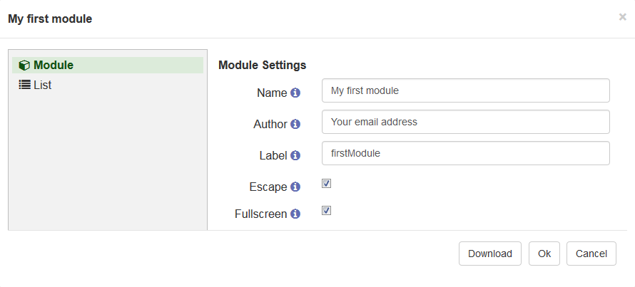
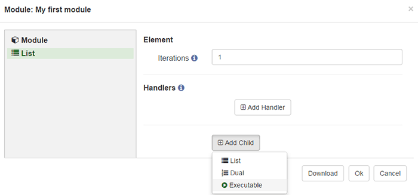
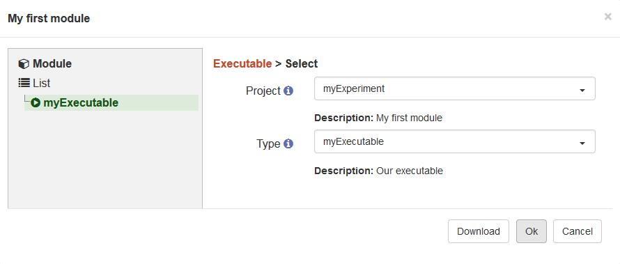
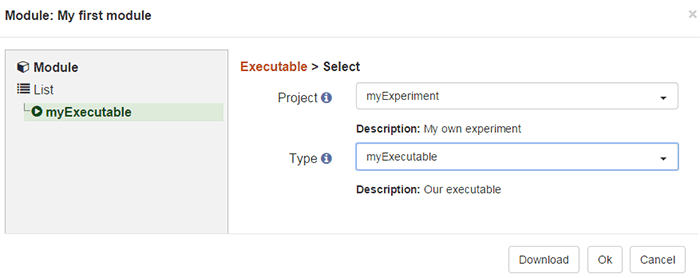

The filenames for an Executable need to follow the Tatool naming convention in order to be recognized. The service has to be called [Service name].service.js, the controller [Service name].ctrl.js and the template [Service name].html.
In this section you'll learn how to create your first Executable, add it to your Tatool Project, and embed it in a Module. With the theoretical background about Tatool's Executable Architecture, you can now create the three corresponding files for your first Executable which we're going to call 'myExecutable'. We'll talk you through the content of these files. Don't worry if the code looks complicated to you at first, it will all make sense in a few minutes. We'll start by creating very basic scaffolding files which we'll expand over the next few sections. So wherever you see a comment (e.g. // our custom methods go here), we'll be adding more content later on.
tatool.factory('myExecutable', [ 'executableUtils',
function (executableUtils) {
var MyExecutable = executableUtils.createExecutable();
MyExecutable.prototype.init = function() {
// our Executable initialization code goes here
};
// our custom methods go here
MyExecutable.prototype.stopExecution = function() {
executableUtils.stop();
};
return MyExecutable;
}]);
The tatool.factory() method in line 1 will instantiate our Service for us. Because we're going to have multiple Services, we need to assign a unique name to our Service. The first argument of the tatool.factory() method defines just that name. Use lowerCamelCase to name your Executable Service and make sure that you use the exact same name as you used to prefix your filename. In our case the filename is 'myExecutable.service.js', so the name of our Executable Service has to be 'myExecutable'. The naming is very important because Tatool will look for the file according to the name you've given in your Service, and will fail to locate the file if they don't match.
The filenames for an Executable need to follow the Tatool naming convention in order to be recognized. The service has to be called [Service name].service.js, the controller [Service name].ctrl.js and the template [Service name].html.
The second argument of the tatool.factory() method is an array [] containing the dependencies and, as the last entry on line 2, the main function. As you can see, we've already added the dependency 'executableUtils' which is a service provided by Tatool. Every dependency has to occur twice, once as a String entry in the array, and once as an argument in the main function. In case you have multiple dependencies, take care that the order of the dependencies matches.
On line 4 we create an instance of our Executable with the help of the executableUtils Service, and on line 15 we return that instance. Remember that every Service is created only once per Session and, therefore, things we create in here will persist across the execution of trials. Hence, wherever we will use this Executable Service, it will always return this one instance that we've just created.
Generally, we don't want our users to wait 5 seconds before every trial execution until the stimulus has loaded. Therefore, to avoid any long running processes during the actual execution of our Executable, Tatool provides the mandatory prototype method 'init' (here on line 6). This method is called once at the beginning of every Session and allows for preparing (i.e., initialising) your Executable for execution. This can comprise the reading of stimuli files, preloading of stimuli material such as images or videos, and creation of any other objects that need to be created only once per Session.
At the end of each trial, we'll want to end the execution of our Executable to allow it to execute the next trial. To provide a method for our Controller to be able to do so, we add our first custom prototype method on line 11 and name it 'stopExecution'. Within this method, we once again make use of a method that is provided by the executableUtils Service, its stop() method. As the name says, this method stops the current execution of this Executable. We'll be using our custom method 'stopExecution' later in our Controller.
That's it for the basic structure of our Executable Service. You can use this example code as a starting point for programming your future Executables, as it contains the minimum code required for an Executable to run.
tatool.controller('myExecutableCtrl', [ '$scope', 'service',
function ($scope, service) {
$scope.start = function() {
// our code goes here
service.stopExecution();
}
// our custom methods go here
}]);
As you can see, the first two lines look extremely similar to our Executable Service. This time, we're calling the method tatool.controller() in line 1 which will instantiate our controller. Similar to the Service, we have to define the dependencies, but here we add two different ones. The Controller always needs the two dependencies $scope and service in order to fulfill its mediating role in terms of talking to our Template (using the '$scope') and our Service (using the 'service').
The body of our Controller contains only one mandatory method on line 4. It's called 'start' and belongs to the $scope service. This method is the starting point of your Executable and will be called once the Service, Controller and Template have loaded successfully. Inside this method, you'll later define what happens during the execution (e.g., displaying the stimulus and then wait for a response). For now, we'll only call the method stopExecution() provided by our Service (see above) that will immediately stop the current execution.
<tatool>
<!-- our content goes here -->
</tatool>
Yes, that's the minimum required code for a Template. Once all content contained within the <tatool> element has finished loading, Tatool (line 1) will call our Controllers' 'start' method.
Now that we have created all required files for our first Executable, albeit a pretty boring one, it's time to see whether we can actually run it. In order to run the Executable, we'll first have to put the files into a Project, which in turn can be used by a Module.
1. Copy/save the three Executable files into the Project executables sub-folder (app/projects/public/myExperiment/executables) of your local Tatool installation. If the folder is not yet available, make sure to complete the previous step of (Setting up a Project) first.
2. Login to your local Tatool with any user having the 'Editor' role (note that you might have to add such a user first). Once logged in, click on the 'Editor' tab in the top navigation. On the Editor page create a new Module and add a new Executable to the List Element. Change the Type of the Executable by clicking on the blue edit button. Choose the Project 'myExperiment' we just added before and select the 'myExecutable' Executable in the Type dropdown below. Press 'Save' and then 'Save & Exit ' to save the Module.




3. You can now run your Module by pressing the 'Test' button in your Editor Tab. Tatool will open the Module and finish immediately by returning to the Module overview screen. This is exactly what we expect, as we didn't add any logic to our Executable yet.
As a next step, we're going to create a stimuli file and the corresponding stimuli for our Executable. To proceed, please go to Create Stimuli.